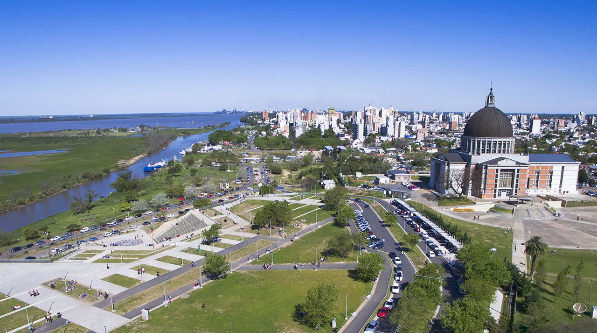

San Nicolás de los Arroyos
Una ciudad con buena gente
San Nicolás de los Arroyos (referido también simplemente como San Nicolás) es una ciudad de argentina, cabecera del partido de San Nicolás. Está situada en el extremo norte de la Provincia de Buenos Aires, sobre el río Paraná y a la vera de la Autopista Buenos Aires - Rosario. Se ubica a 236 km de la Ciudad Autónoma de Buenos Aires, 74 km de Pergamino, 229 km de la Ciudad de Santa Fe y a 69 km de la Ciudad de Rosario.
